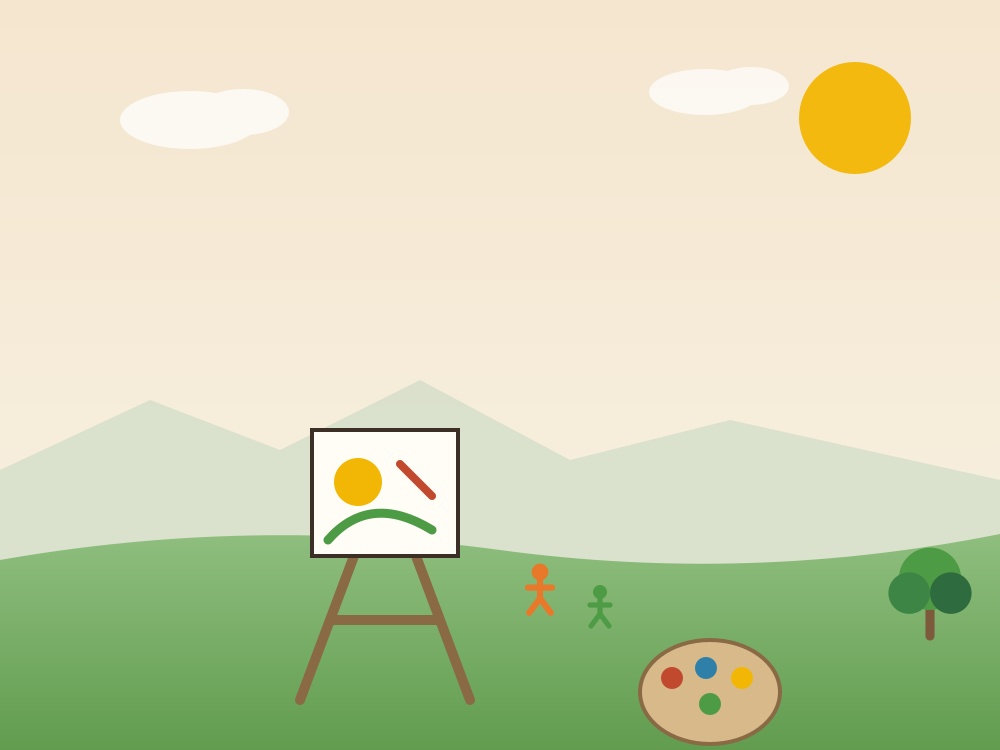
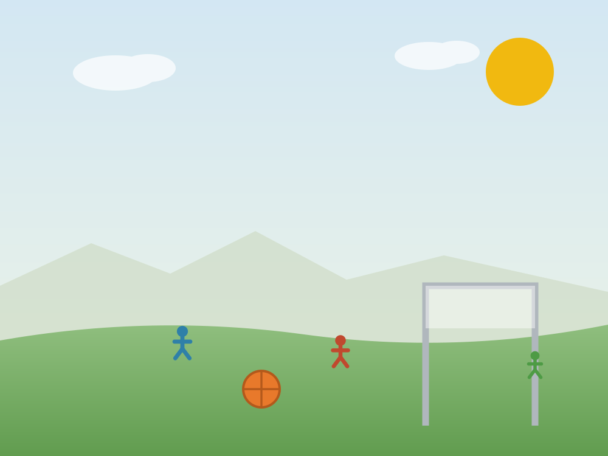
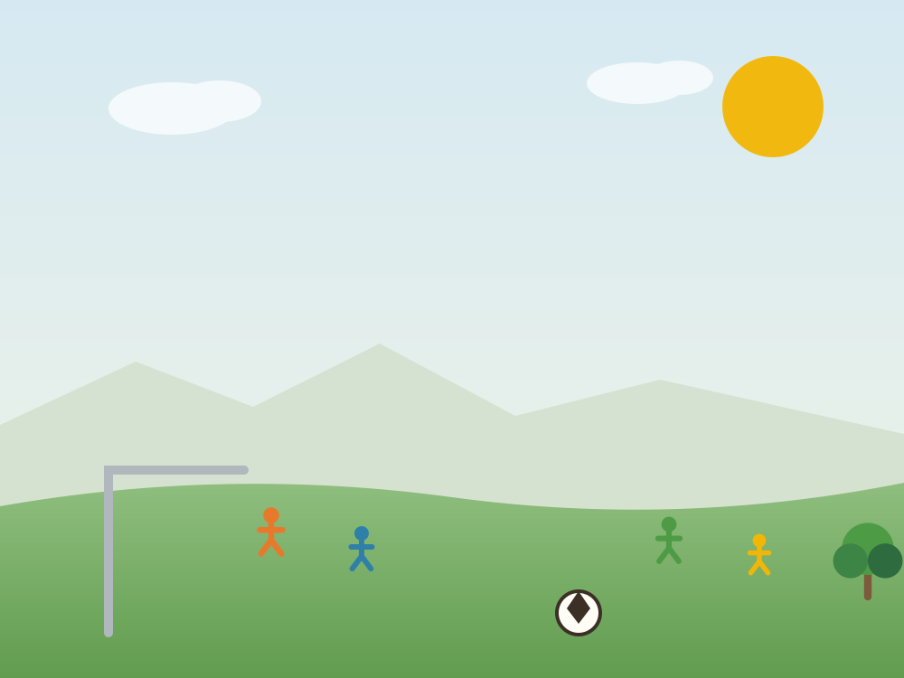

Semilleros de investigación
Grupos de estudiantes que profundizan en un tema durante todo el año y lo presentan en la feria institucional de proyectos.
Vida escolar
Arte, deporte, salidas pedagógicas, celebraciones y asambleas. La vida cotidiana del colegio es parte del currículo, no un complemento.

El lugar
Aulas amplias y luminosas, laboratorios, biblioteca, talleres de arte, comedor, canchas y zonas verdes. Los espacios están organizados por niveles para que cada edad tenga su propio territorio dentro del colegio.
Todo el campus se recorre a pie y está pensado para que el movimiento entre espacios sea parte natural de la jornada.
Programas y proyectos
Grupos de estudiantes que profundizan en un tema durante todo el año y lo presentan en la feria institucional de proyectos.
Plástica, música y expresión escénica durante todo el año, con una muestra abierta a la comunidad al cierre de cada semestre.
Salidas de campo por nivel y convivencias de varios días para bachillerato: autonomía, convivencia y aprendizaje fuera del aula.
Juego cooperativo, atletismo y deportes de conjunto con énfasis en la participación por encima del resultado.
Personería, consejo estudiantil y asambleas: los estudiantes participan en decisiones reales de la vida institucional.
Encuentros de formación y conversación con madres, padres y cuidadores sobre crianza, límites y acompañamiento.
Galería
Filtra por tema y haz clic en cualquier imagen para verla en grande.







assets/img/originals/ y ejecuta
python tools/optimize_images.py; el sitio pasará solo a usarlas en formato
AVIF, WebP y JPG. Importante: necesitas la autorización escrita de uso
de imagen de las familias antes de publicar fotos de menores de edad.
Calendario A
Estructura general del año. Las fechas exactas se publican en la circular de inicio de año y en la sección de noticias.
| Momento del año | Hito | Detalle |
|---|---|---|
| Enero | Inicio de clases | Semana de acogida y construcción de acuerdos por grupo. |
| Marzo | Cierre primer período | Informes descriptivos y reunión individual con cada familia. |
| Abril | Semana de receso | Receso escolar de Semana Santa. |
| Junio | Muestra artística | Teatro, música y artes plásticas abiertos al público. |
| Junio – julio | Vacaciones de mitad de año | Receso escolar. |
| Agosto | Convivencias y salidas | Salidas pedagógicas de varios días para bachillerato. |
| Septiembre | Feria de proyectos | Semana de la ciencia y muestra de semilleros de investigación. |
| Octubre | Pruebas Saber 11 | Presentación oficial de los estudiantes de grado 11º. |
| Noviembre | Clausura y grados | Cierre del año escolar y ceremonia de grado de la promoción. |
Servicios
Transporte con acompañante en ruta y horarios coordinados con la jornada escolar.
Almuerzo y refrigerio preparados en el campus, con minuta revisada por nutricionista.
Apoyo al desarrollo emocional de los estudiantes y orientación a las familias cuando se requiere.
Circulares, reuniones por período y canal directo con el director de grupo de cada estudiante.
Recibimos a las familias interesadas durante la jornada escolar para que vean el colegio funcionando de verdad, sin montaje.